Format C and D drives and reinstall Windows 11
overview:
format hard drive D
create windows usb bootable
format hard drive C
- Boot pc with the flash drive
- Select language and click "Next."
- Select "Repair your computer"
- Select "Troubleshoot" > "Advanced options" > "Command Prompt"
- Type diskpart and press Enter.
- Type list volume to see all drives and their letters.
- Type select volume X (replace X with the volume number or letter of the C drive).
- Type format fs=ntfs quick (or format fs=exfat quick if you prefer that filesystem) and press Enter.
- Type exit and close command prompt
install windows
right click on local disk D, then "Format..."
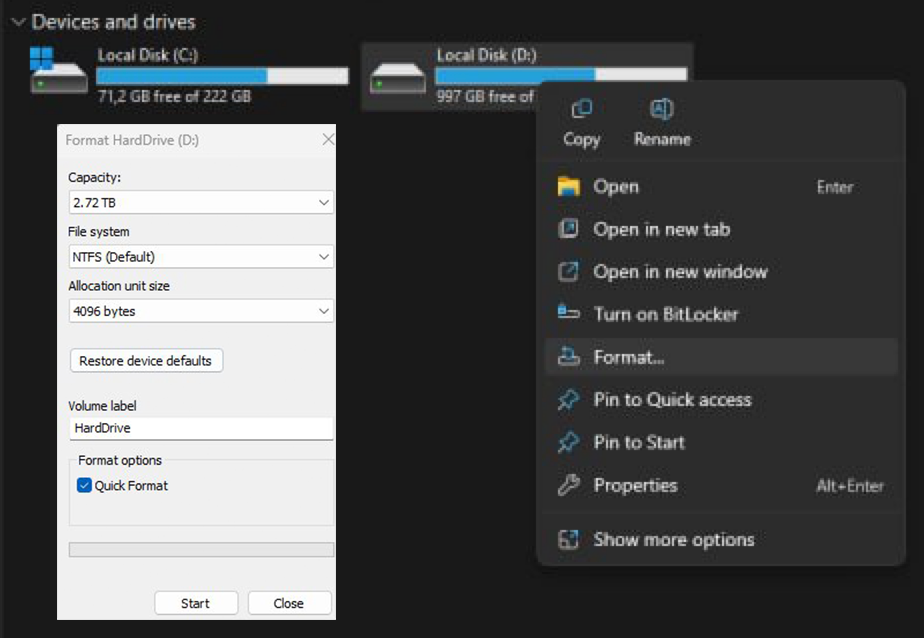choose if u want a quick or a full format in "Format options". I opted for full and it took me about 8 hours for my 3TB hard drive so choose wisely
u cant format your C drive this way as it has windows running on it. Insert 8gb usb flash drive & download media creation tool
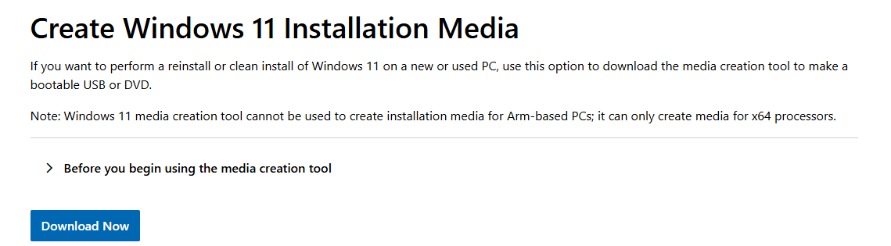choose language and edition, then go with a usb flash drive option. It will erase everything on the drive, care
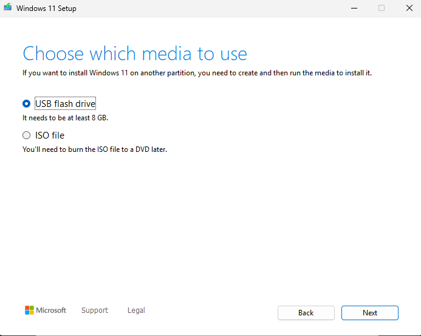drive should look like this
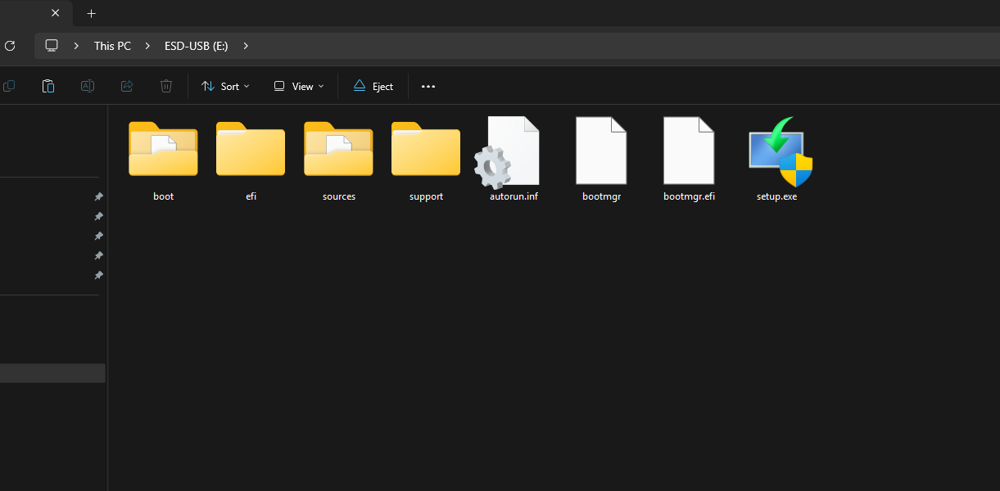now is a good time to find out whats your windows product key as we will fully empty all the information from our hard drives. I didn't do that and just went with the "I don't have a product key" options and it went fine
restart your computer and boot up bios. U need to spam the correct button while windows is loading, usually its smth like F2, F12 or DEL
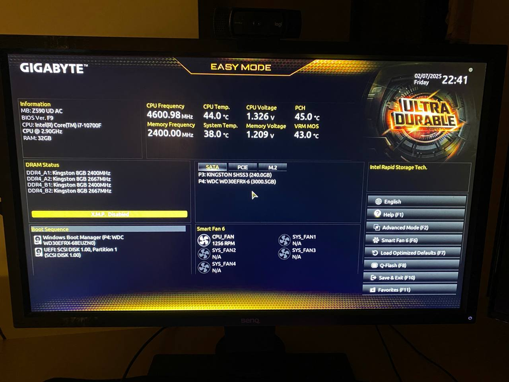
my bios looks this way. In the left bottom corner u can see "Boot Sequence". U need to change the order your computer boots your drives, currently, it prioritize disk C and u need to make your flash drive the top priority. Should be done in a few clicks, save and exit after that
u should be greeted with windows 11 setup, get to "Select setup option" and choose "Repair my PC"
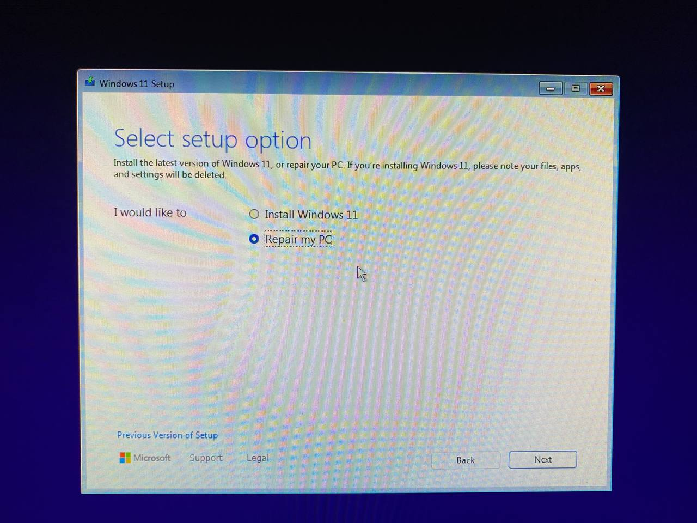
choose keyboard layout and u should end up in this menu where u need to click "Troubleshoot" and then "Command Prompt"
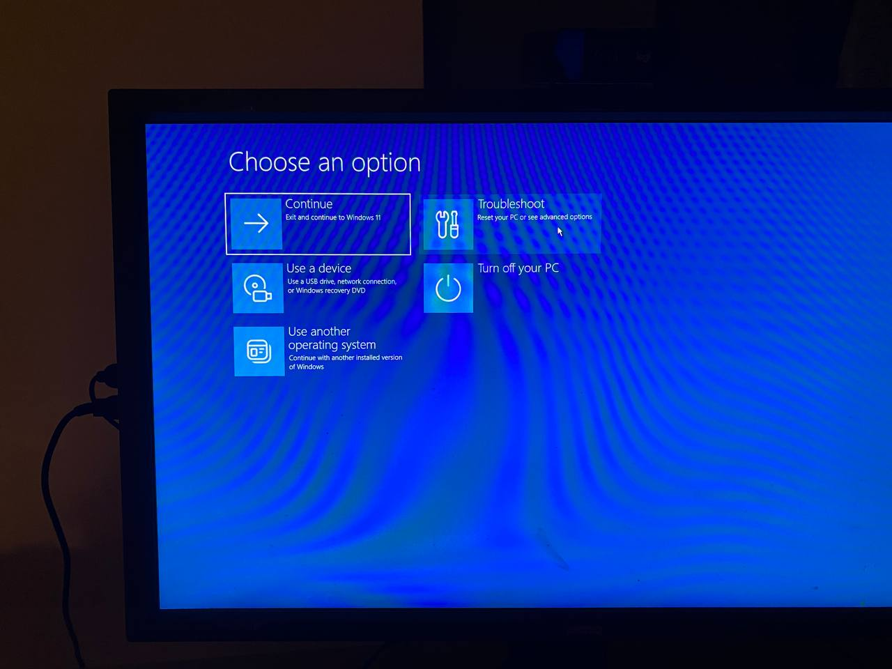
in command prompt type "list volume". U will see more volumes than the amount of hard drives u have, just focus on the ones with the size in GB. Define your C drive, mine is clearly volume 0
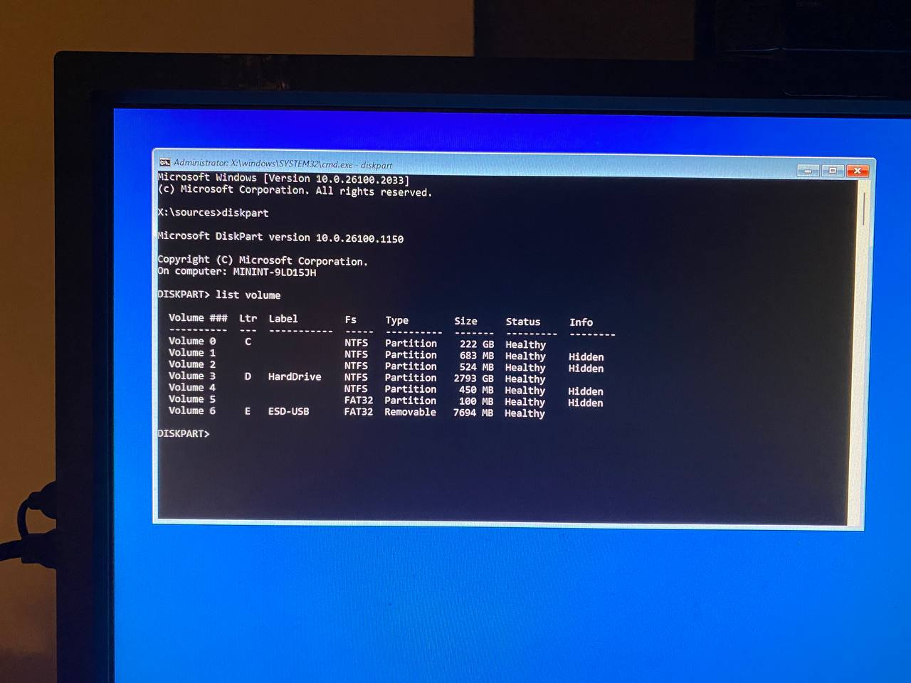
type "select volume 0", yours might not be 0, check. Then type "format fs=ntfs" for full format or "format fs=ntfs quick" for a quick one
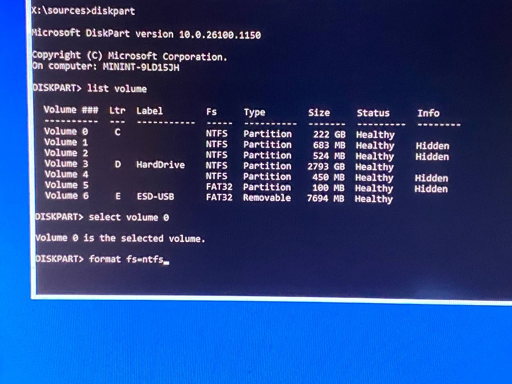
disk C formatted, type "exit" and close the command prompt with your mouse cursor. In "choose an option" menu pick "Continue".
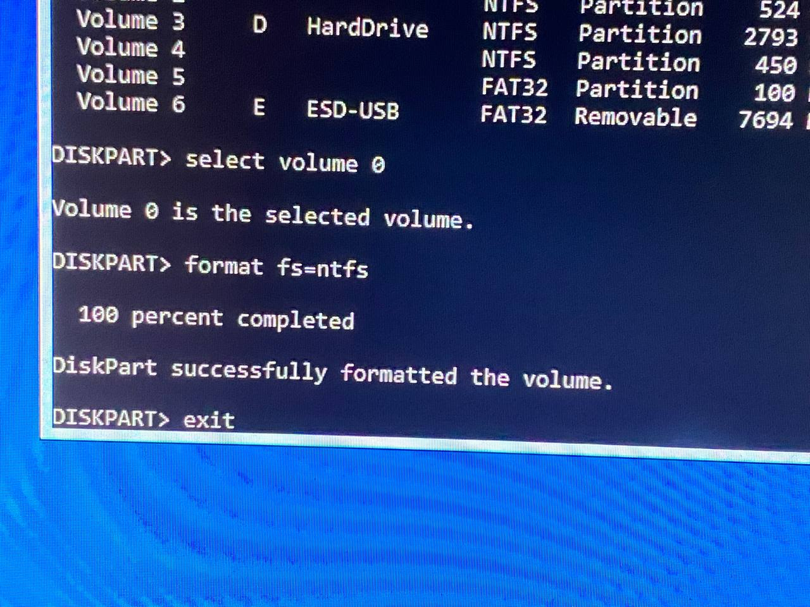
choose language and congratz, now u can pick "Install Windows 11" option O
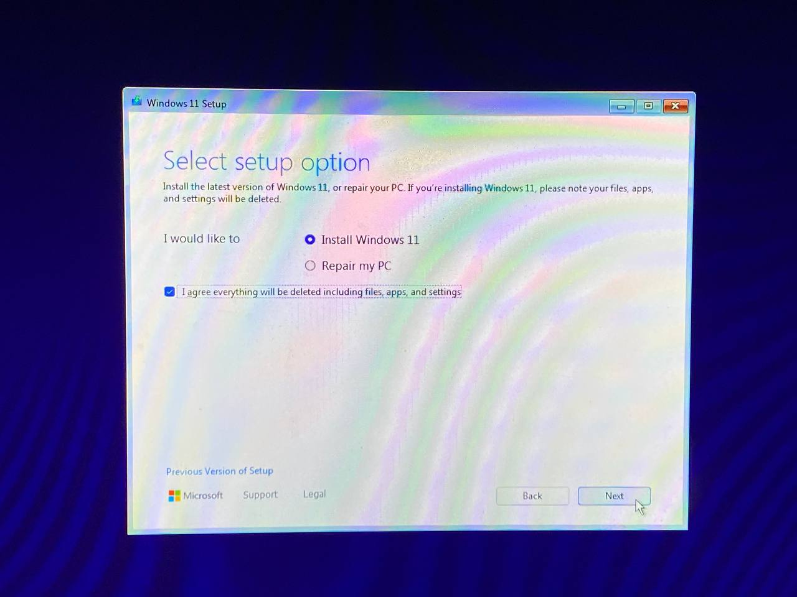
opt for Windows 11 Pro and select the partition with apropriate amount of GB a disk C would have. After some installation i got greeted with this error message. I removed the flash drive with media creation tool and clicked "Yes"
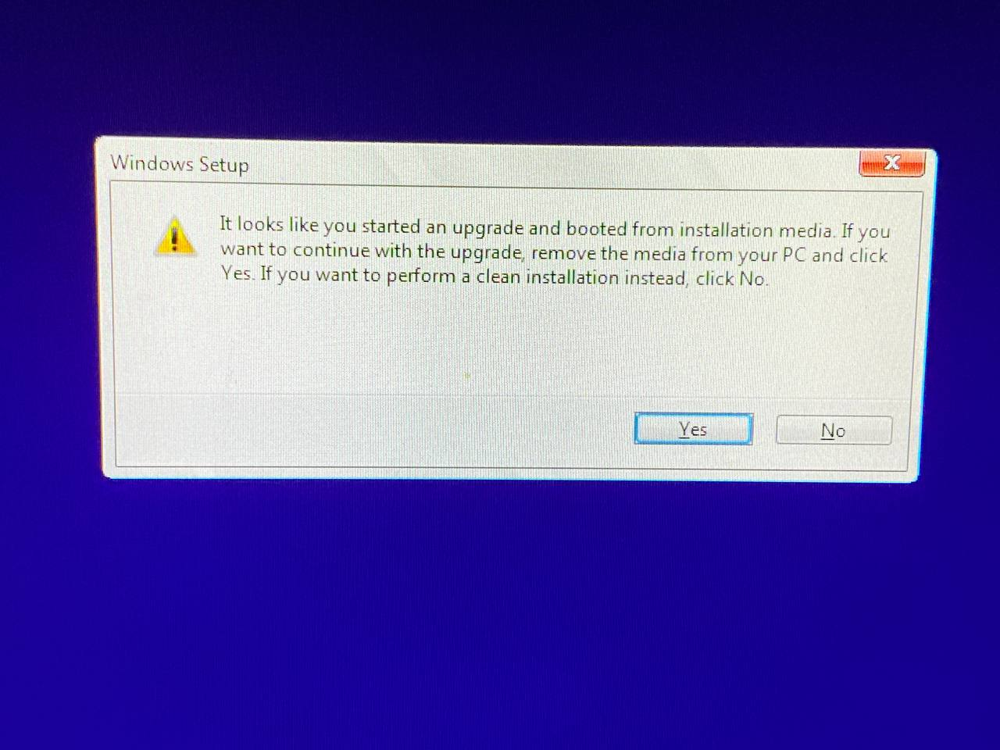
sucsexs
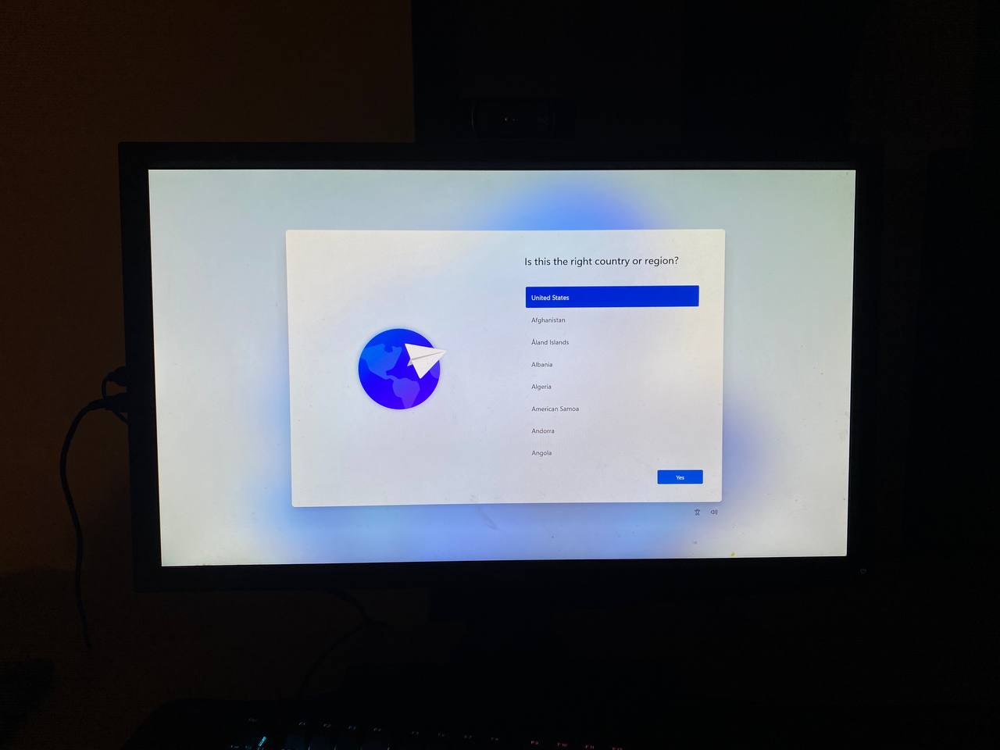
join discord devlog discussion channel